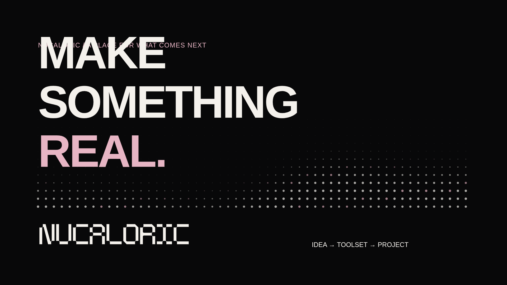
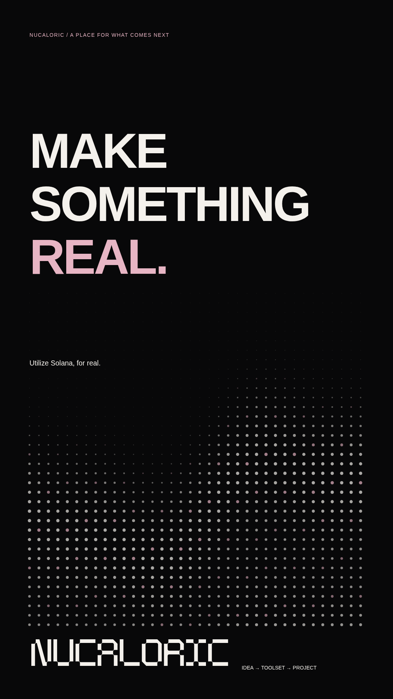
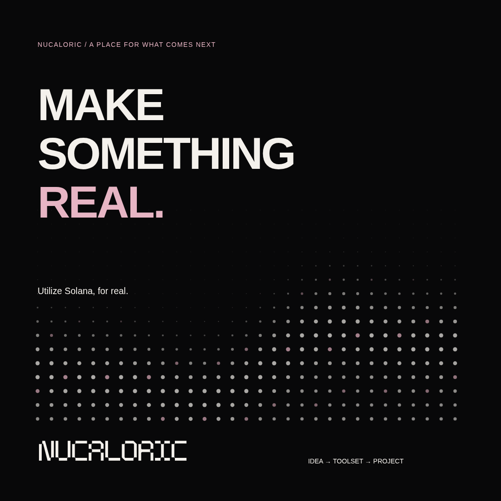
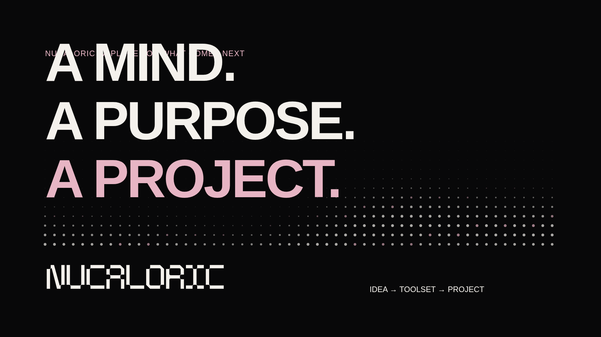
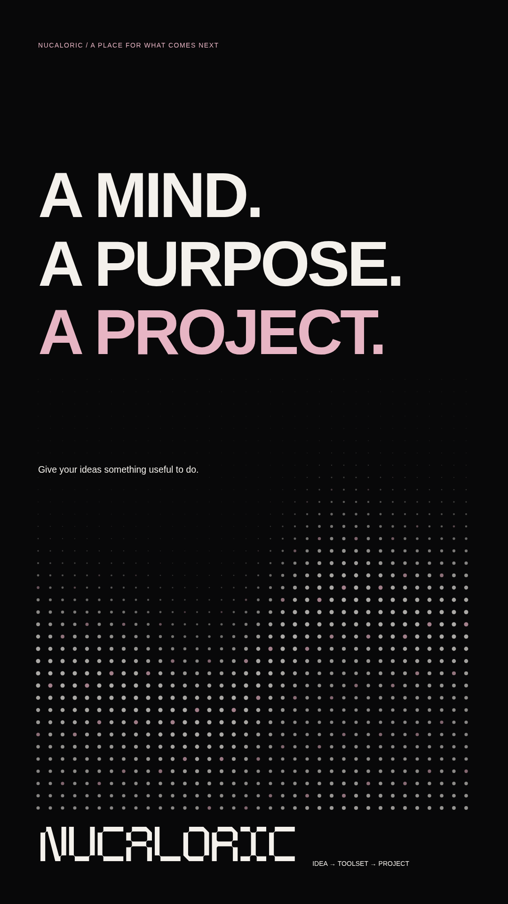
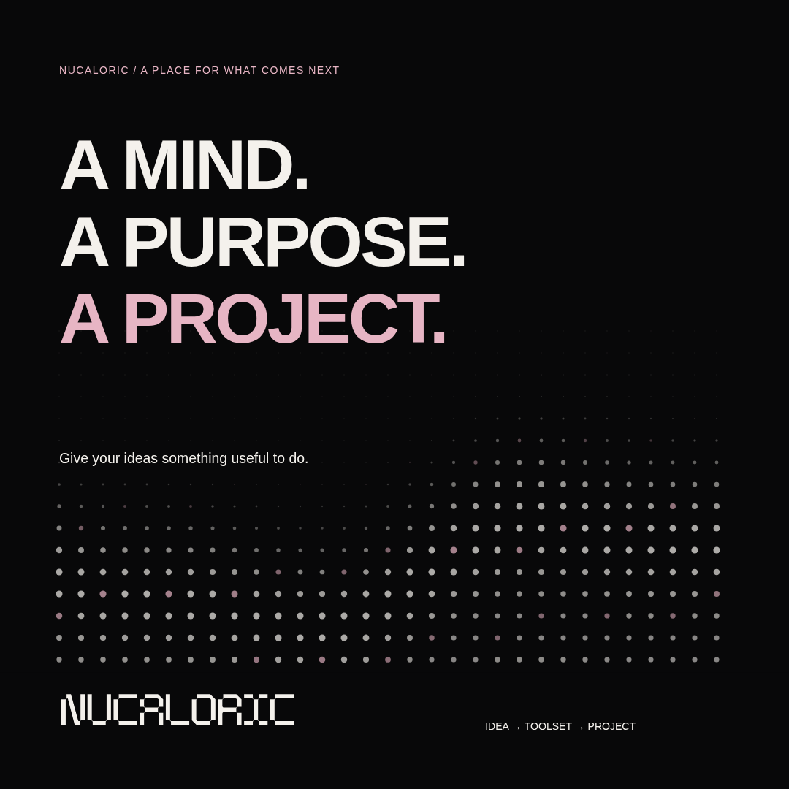
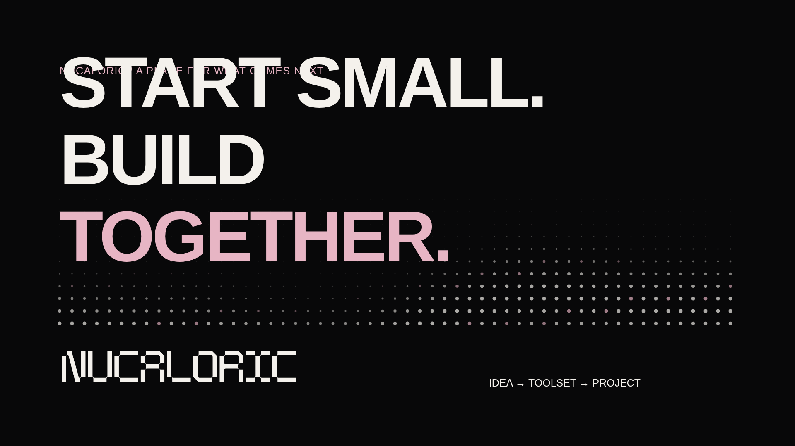
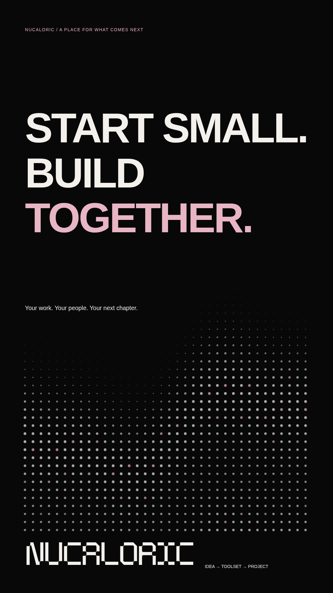
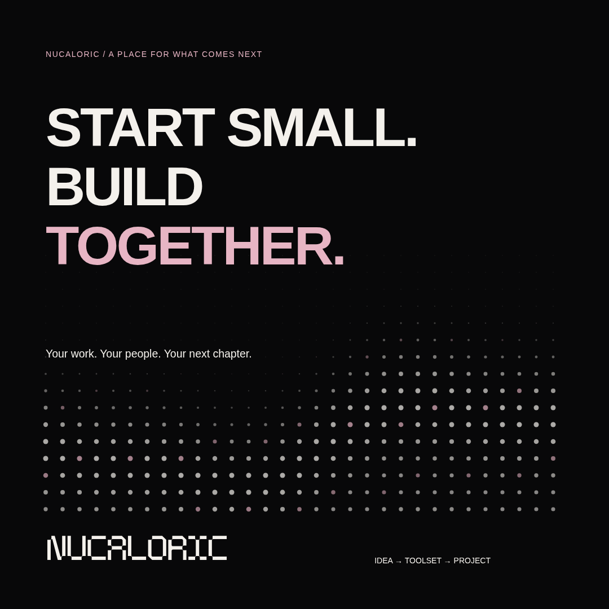

Nine editable graphics. Nine PNG exports. Three silent motion clips. Black, paper, pale pink — and a little room for your next idea.
Asset formats and rebuild instructions ↗
MAKE / LANDSCAPEPNG ↓ · Editable SVG ↗
MAKE / PORTRAITPNG ↓ · Editable SVG ↗
MAKE / SQUAREPNG ↓ · Editable SVG ↗
MIND / LANDSCAPEPNG ↓ · Editable SVG ↗
MIND / PORTRAITPNG ↓ · Editable SVG ↗
MIND / SQUAREPNG ↓ · Editable SVG ↗
TOGETHER / LANDSCAPEPNG ↓ · Editable SVG ↗
TOGETHER / PORTRAITPNG ↓ · Editable SVG ↗
TOGETHER / SQUAREPNG ↓ · Editable SVG ↗